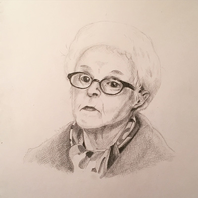
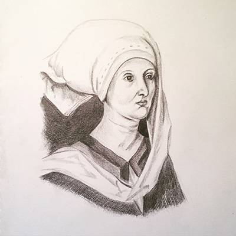
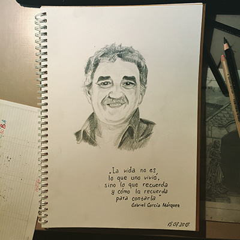
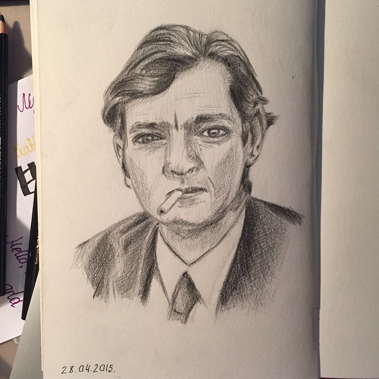
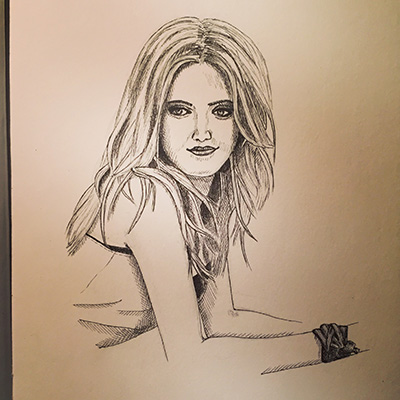
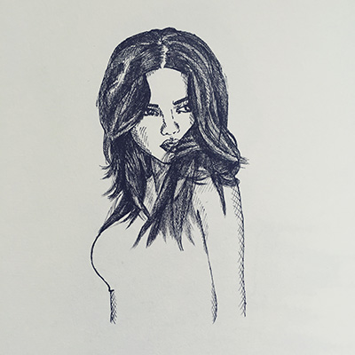
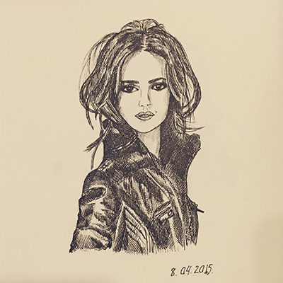

Еще одна небезызвестная актриса #sketch #nightsketch Сходство с оригиналом чисто
условное, но если сравнивать с тем, что было год назад, то, кажется, есть какой-то прогресс.
16

Испанская актриса Чус Лампреаве (Chus Lampreave) #sketch #nightsketch
11

По мотивам Дюрера #sketch #nightsketch
17

Возвращаясь к моим упражнениям #sketch What matters in life is not what happens to
you but what you remember and how you remember it
9

Моя версия Хулио Кортасара #sketch Определенно, утром я еще пожалею о бесцельно проведенной ночи.
11

Еженочные зарисовки #sketch Мужчин я тоже иногда рисую, но с ними все сложно.
Длинные волосы упрощают дело.
18

#sketch #100 в этом году. Адриана Лима
12

Традиционный ночной #sketch. Портрет актрисы, но лицо не похоже, поэтому я не скажу
какой :)